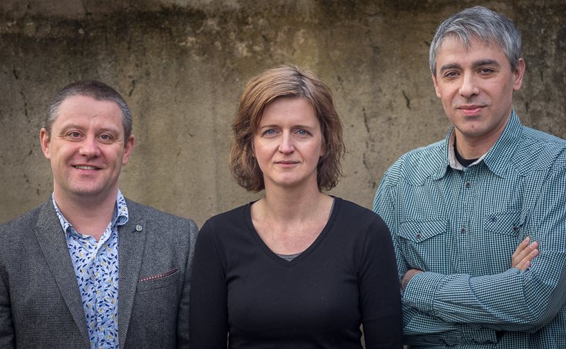

£1 million grant to shed light on how we learn languages
A £1 million grant to help researchers understand what speakers know about languages, in order to help make learning foreign languages easier, has been awarded to the University of Sheffield's Faculty of Arts and Humanities.
Over five years, the Research Leadership Award from the Leverhulme Trust will allow experts to develop new, accurate ways of describing speakers’ linguistic knowledge, by using machine-learning techniques that mimic the way in which humans learn.
The patterns they find will be verified in laboratory settings and then tested on adult foreign language learners to see if such patterns can help them learn a foreign language in a way that resembles how they learned their mother tongue.
The aim is to lead a step-change in research on language and language learning by capturing the linguistic knowledge adult speakers build up when they are exposed to a language in natural settings. These insights will help with the development of strategic language teaching materials to transform the way in which we teach foreign languages.
The team will be led by Dr Dagmar Divjak from the University’s School of Languages and Cultures, in close collaboration with Dr Petar Milin, Department of Journalism Studies, and with Research Software Engineering support from Dr Mike Croucher, Department of Computer Science.
Sheffield's Research Software Engineering Group are collaborators on the project and will provide support in High Performance Computing, software engineering and data management. This will help ensure that all developed software is efficient, correct, citable, easy to use and openly available. The aim is to maximise research impact and reproducibility through the application of modern software engineering methodologies.
